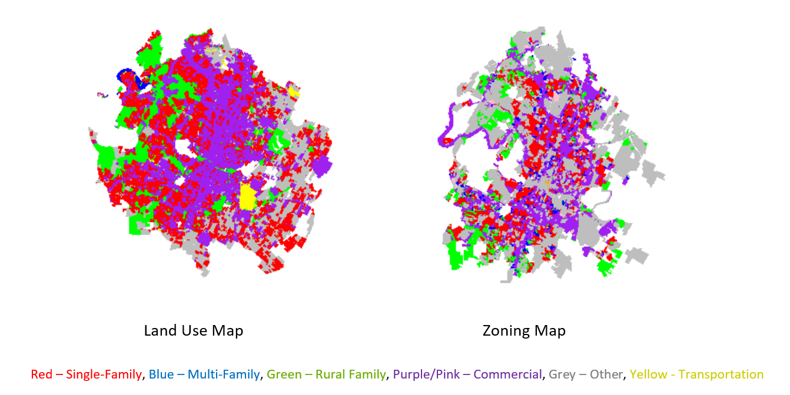

Austin Land Use
I compiled the land use of Austin by zoning and land use data. Furthermore, number of parking spaces and the square footage of those parking spaces by land use (single family homes, apartments and commercial buildings). Furthermore, I compared that square footage with the square footage actually in the buildings and the land area of the city of Austin. And then I used the building data I compiled to determine how much rooftop space Austin has and how much solar that could hold. I then compared those results to similar studies. I also wanted to find income correlations and land changing results as well, but finding property tax information hard to compile. As for how things might change land use, turns out Austin has pretty strict zoning and the only thing that would change that is to redo the codes.
The code and final report are available on Github:
https://github.com/yamierick/Engineer_Living/tree/master/Austin_LandUse
Key Image

As a percentage of total land area, parking doesn’t take up that much space (less than 5%). However, of the building square footage parking is 40% of the created space which is shocking. That means that anytime someone wants to build anything almost 40% of the usable space is solely to store cars.
Other things that pop out when looking at Austin’s land use map is the enormous amount of land used for single family housing which have large lots. In fact, single family zoning area is almost 7 times as large as multi family zoning even though multifamily housing houses more people. Another major thing that pops out are the immense amount of park lands Austin has. In fact there is more land used for parks and nature than there is for single family homes. As Austin becomes more dense easing the single family zoning and allowing more multi family buildings to be constructed in those areas will dramatically ease housing costs and it can be done without eating into any parkland.
However, one of the advantages of having so much single family housing it means there is a ton of potential for rooftop solar with the housing roof space accounting for a whooping ¾ of the 4 GW of rooftop solar potential in Austin.
All in all, if I was writing Austin’s codes, I would reduce the size of the single family lots, encourage more multifamily lots, eliminate parking requirements entirely (let the market decide how much parking to build), encourage all homeowners to put solar on their rooftops, and then upgrade the grid to spread all of that solar energy across the city.